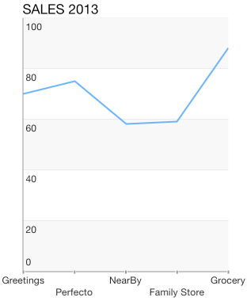
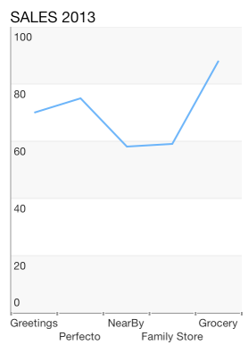

Chart Axes: Categoric
TKChart uses Categoric axes to plot data that contains categoric values. The axis is valid only in the context of Cartesian series. It also introduces several important properties:
majorTickInterval - defines an interval among major axis ticks.
minorTickInterval - defines an interval among minor axis ticks.
baseline - contains a value, which defines how the series data should be aligned. For example, The TKChartBarSeries might render its bars up and down depending on whether its value is greater or less than the baseline value.
offset - determines an axis value where the axis is crossed with another axis.
Configure a TKChartCategoryAxis
You can configure a category axis by settings its categories property. You should use the following code snippet as a sample:
Objective-C
NSArray *categories = @[ @"Greetings", @"Perfecto", @"NearBy", @"Family Store", @"Fresh & Green" ];
NSArray *values = @[ @70, @75, @58, @59, @88 ];
NSMutableArray *pointsWithCategoriesAndValues = [[NSMutableArray alloc] init];
for (int i = 0; i < categories.count; i++) {
TKChartDataPoint *dataPoint = [[TKChartDataPoint alloc] initWithX:categories[i] Y:values[i]];
[pointsWithCategoriesAndValues addObject:dataPoint];
}
TKChartCategoryAxis *xAxis = [[TKChartCategoryAxis alloc] initWithCategories:categories];
chart.xAxis = xAxis;
Swift
let categories = ["Greetings", "Perfecto", "NearBy", "Family Store", "Fresh & Green" ];
let values = [70, 75, 58, 59, 88]
var pointsWithCategoriesAndValues = [TKChartDataPoint]()
for var i = 0; i < categories.count; ++i {
pointsWithCategoriesAndValues.append(TKChartDataPoint(x: categories[i], y: values[i]))
}
let xAxis = TKChartCategoryAxis(categories: categories)
chart.xAxis = xAxis
You can specify the axis range by setting the minimum and maximum indexes of categories:
Objective-C
xAxis.range = [TKRange rangeWithMinimum:@0 andMaximum:@2];
Swift
xAxis.range = TKRange(minimum: 0, andMaximum: 2)

Setting the plot mode of axis
The TKChartAxisPlotMode is used by the axis to plot the data. Possible values are TKChartAxisPlotModeBetweenTicks and TKChartAxisPlotModeOnTicks. TKChartAxisPlotModeBetweenTicks plots points in the middle of the range, defined by two ticks. OnTicks plots the points over each tick.
You should use the following lines of code to alter this behavior:
Objective-C
xAxis.plotMode = TKChartAxisPlotModeBetweenTicks;
Swift
xAxis.setPlotMode(TKChartAxisPlotMode.BetweenTicks)

Objective-C
xAxis.plotMode = TKChartAxisPlotModeOnTicks;
Swift
xAxis.setPlotMode(TKChartAxisPlotMode.OnTicks)
